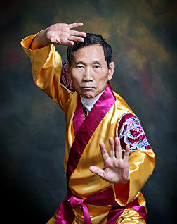

Martial Arts School
Telephone Number: 07545 239300 or 07957 961877

Unlike any other martial arts style, Kuk Sool Won is headed by one master who maintains a strict quality control over all schools that teach Kuk Sool, ensuring that all students learn the art as it has been taught for thousands of years. Our Grand Master is In Hyuk Suh, whose title is Kuk Sa Nim, or National Instructor.
Unlike any other martial arts style, Kuk Sool Won is headed by one master who maintains a strict quality control over all schools that teach Kuk Sool, ensuring that all students learn the art as it has been taught for thousands of years. Our Grand Master is In Hyuk Suh, whose title is Kuk Sa Nim, or National Instructor. In 1974, Kuk Sa Nim emigrated to America where, in 1975, he established the WORLD KUK SOOL ASSOCIATION. Since that time, many hundreds of schools have opened throughout the USA, as well as in several other countries including Gt. Britain. It is now considered that worldwide, over one million students have passed through the doors of the Kuk Sool Won.
In Hyuk Suh originally organized the many different facets of ancient and contemporary Korean martial arts into the current curriculum of Kuk Sool Won™ and he is the founder of the World Kuk Sool Association, formally establishing it in Korea in 1958 Grandmaster SUH's introduction to the traditional Korean martial arts began at the age of five in the early 1940's. His first teacher was his grandfather SUH, MYUNG DUK, who was a Master Instructor of the Korean Royal Court army before the Japanese occupation of Korea in 1910. After returning to his hometown of Taeg, Grandmaster SUH, MYUNG DUK secretly taught only members of his immediate family, continuing the family's tradition of practicing the martial arts as it had been done for sixteen generations. When SUH, IN HYUK was old enough to begin his training, he immediately showed such promise that his grandfather decided that he would be the one to whom he would give the greatest attention.